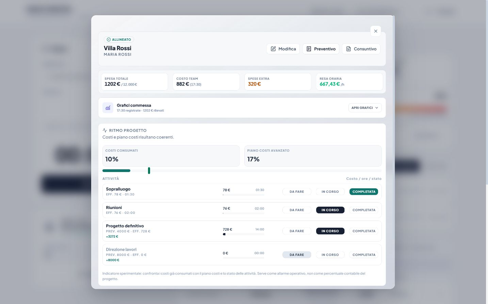

Il problema prima della funzione
Ogni strumento deve rendere più chiaro il rapporto tra lavoro svolto, costo e risultato economico.
Il progetto
Arch Time Pro nasce dall'esperienza di uno studio di architettura: ore non preventivate, varianti, spese e margini che diventano chiari solo quando è troppo tardi per intervenire.

Da dove nasce
Durante una commessa è facile sapere quanto è stato pattuito. Molto più difficile è capire, mentre il lavoro procede, quanto stanno costando davvero le ore del team, le attività fuori previsione e le spese sostenute.
I fogli di calcolo richiedono aggiornamenti continui. I time tracker raccolgono il tempo, ma spesso non lo collegano al margine. I gestionali più ampi chiedono invece di ripensare l'intera organizzazione dello studio.
Arch Time Pro è nato per occupare lo spazio in mezzo: abbastanza semplice da essere usato ogni giorno, abbastanza concreto da mostrare se una commessa sta ancora producendo utile.
Fondatore e sviluppatore
Architetto
Sono un architetto e conosco dall'interno la distanza che può crearsi tra il valore di un incarico e il tempo realmente necessario per portarlo a termine.
Ho iniziato a sviluppare Arch Time Pro perché non trovavo uno strumento che rispettasse il modo di lavorare di uno studio tecnico: collaboratori liberi di registrare le attività, dati economici riservati alla direzione e informazioni immediatamente leggibili.
Il progetto viene costruito attraverso l'uso reale, il confronto con altri professionisti e una scelta precisa: aggiungere una funzione soltanto quando aiuta a prendere una decisione migliore.
Come viene costruito
Ogni strumento deve rendere più chiaro il rapporto tra lavoro svolto, costo e risultato economico.
Segnalazioni, dubbi e casi reali guidano le priorità più delle mode del software gestionale.
I dati economici restano riservati e il team vede soltanto ciò che serve per lavorare e registrare il tempo.
Un progetto aperto al confronto
La prova dura 15 giorni e non richiede una demo. Puoi partire da una commessa e capire direttamente se il metodo è adatto al tuo studio.